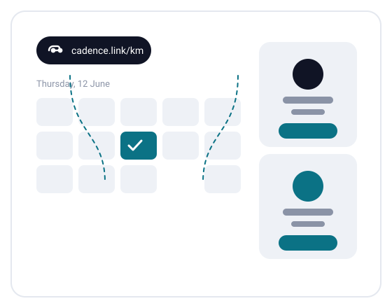
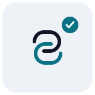
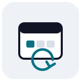
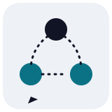

Scheduling that keeps time with your team
Pick a window, share one link, and let Cadence do the chasing.
Start scheduling — free

Share one link.
Your availability, one URL. Guests pick a slot that already works for you, and it lands on both calendars before they close the tab.

No more back-and-forth.
Cadence reads your existing calendar, holds the tentative slot, and releases it if the other side goes quiet.

Built for teams that hand off.
Round-robin between colleagues, shared booking pages per team, and a single view of who is taking what.